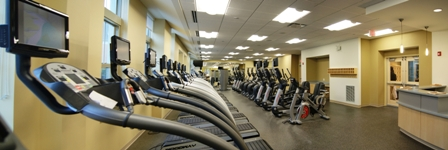

During the first few months at school, it's easy to get caught up with academics, social, activities, and more. However, it's always important to step back and make sure that you're taking care of yourself. Regardless of your grade and whether or not you live on campus, you may visit the university's health center, which provides a range of services including medical checkups and mental health counseling. The Habif Health and Wellness Center is located on the terrace level of the Nathan Dardick House in the South 40 and is open from 9am to 3pm on weekdays. Students are free to schedule appointments using the Student Health Service's online portal or walk-in and be seen by a doctor at any time. The Quadrangle Pharmacy can also be found inside the Habif Center and can handle all medication-related needs. If you would like to contact the health center, you can call the number 314-935-6666 at any time and choose the following option, depending on your specific need:
For other medical needs, you may need one of the following numbers:
It may seem difficult to maintain an active lifestyle when spending so much time sitting in class, but it doesn't have to be! In addition to being right next to Forest Park's beautiful running and biking trails, the university has two gyms that are free for students to use.
